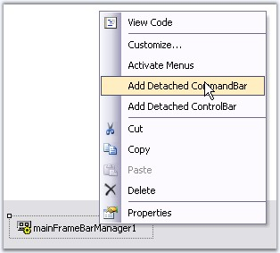
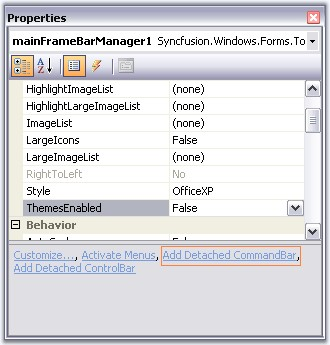
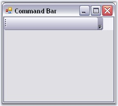
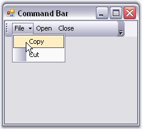
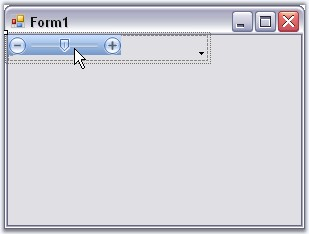
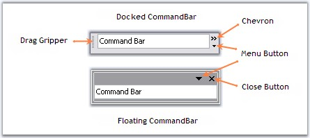

The XP Menus framework provides the flexibility to add detached toolbars through CommandBar that can host any .NET control. These toolbars are detached from the framework in the sense that they cannot participate in user customization. Otherwise, they are seamless in look-and-feel.
Through Designer
Right click on the MainFrameBarManager in the designer and choose the "Add Detached CommandBar" option, to add a detached commandbar.

Figure 787: Adding a Detached CommandBar
 Note: Command Bar can also be added by
clicking the command in the properties window.
Note: Command Bar can also be added by
clicking the command in the properties window.

Figure 788: Add Detached CommandBar Verb
The following screen shot shows the CommandBar in the designer.

Figure 789: CommandBar in the Designer
· Drag and drop XPToolBar control on to the CommandBar and add bar items to the XPToolBar through BarItem Collection Editor.
· The following screen shot shows the XPToolBar with bar items hosted on CommandBar. This command Bar can be hosted to any target within the form by just dragging and dropping.

Figure 790: XPToolbar with Bar Items hosted on CommandBar
To associate a bar with the Command Bar use the below code snippet.
|
[C#]
//Associate the created Bar with CommandBar. CommandBar cmd = this.mainFrameBarManager1.GetBarControl(this.bar1); |
|
[VB.NET]
'Associate the created Bar with CommandBar. Private cmd As CommandBar = Me.mainFrameBarManager1.GetBarControl(Me.bar1) |
XPMenus lets you add custom controls to the CommandBar for example TrackBarEx by simple drag and drop.
|
[C#]
//Adding the control to CommandBar this.commandBar2.Controls.Add(this.trackBarEx1); |
|
[VB.NET]
'Adding the control to CommandBar Me.commandBar2.Controls.Add(Me.trackBarEx1) |

Figure 791: TrackBarEx added to the CommandBar
See Also
Appearance Properties
|
CommandBar Property |
Description |
|
BackColor |
Sets the back color for the control. |
|
BackgroundImage |
Sets the background image for the control. |
|
BackgroundImagelayout |
Specifies the layout of the image. Title, Center, Stretch, Zoom are the options. Default value is Tile. |
|
ChevronColor |
Sets color of the chevron. |
|
Font |
Sets the font style for the text. |
|
ForeColor |
Sets the foreground color of the text. |
|
Text |
Sets the control's text. |
Figure 792: BackgroundImage set; ChevronColor = "Blue"; Text Font = "Verdana 8"; ForeColor = "Red"
Behavior Properties
|
CommandBar Property |
Description |
|
AllowedDockBorders |
Specifies dock border sides in which command bar can be docked from floating. |
|
AlwaysLeadingEdge |
Docks the CommandBar permanently to the leading edge of the dock border. |
|
AlwaysTrailingEdge |
Docks the CommandBar permanently to the trailing edge of the dock border. |
|
DisableDocking |
Disables docking ability of the CommandBar. |
|
DisableFloating |
Disables floating ability of the CommandBar. |
|
DockModeWrapping |
Wraps the docked CommandBar when bounds are less than maximum length. |
|
FloatModeWrapping |
Wraps the floating CommandBar when it is resized to less than its maximum length. |
|
OccupyFullRow |
Lets CommandBar occupy the full row in a form. |
|
ShowDockModeText |
Specifies whether the command bar should display the text that is set through CommandBar.Text property when the command bar is in docked position. |
Hide / Show
|
CommandBar Property |
Description |
|
HideChevron |
When set to true hides the chevron for the CommandBar. |
|
HideCloseButton |
Hides Close button for the floating CommandBar, when set to true. |
|
HideDropDownButton |
Shows / Hides the dropdown button. |
|
HideGripper |
Shows / Hides the drag gripper. |

Figure 793: CommandBar in Floating and Docked mode illustrating various buttons and Gripper
Popup for the DropDown
|
CommandBar Property |
Description |
|
PopupContainer |
Indicates the PopupContainer control that is displayed when the dropdown button is clicked. |
|
PopupMenu |
Indicates the Popup menu on clicking the dropdown button. |